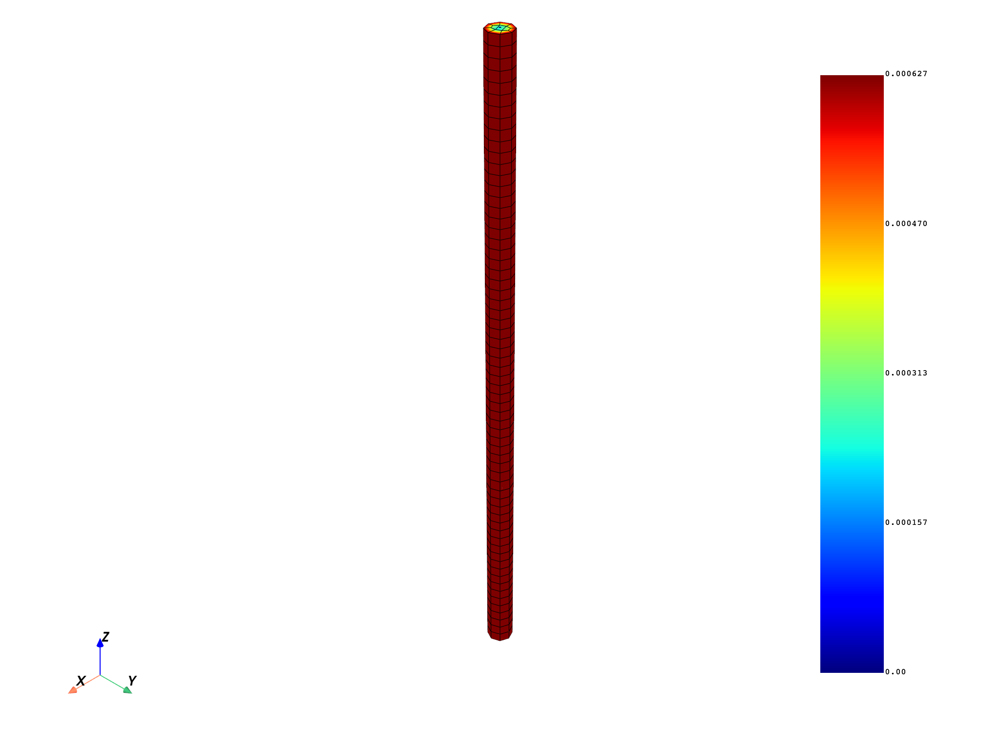
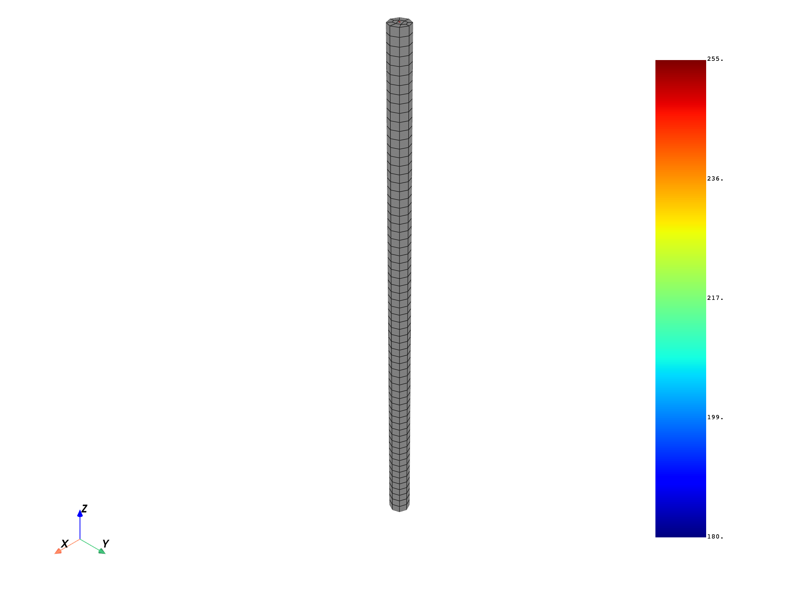
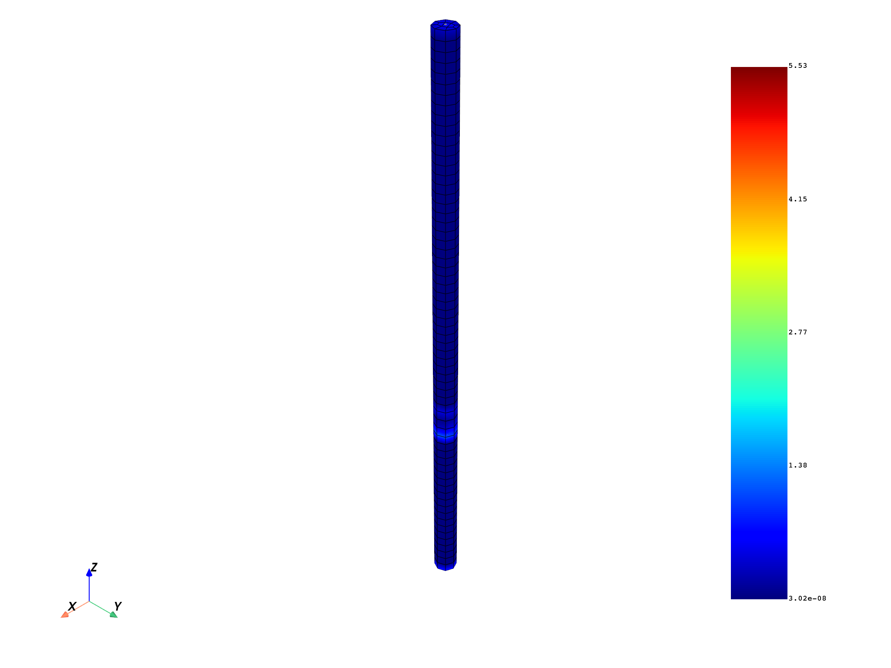

Note
Click here to download the full example code
HDF5 export and import operations#
This example shows you how to use the HDF5 format to export results and meshed regions in an H5 file. It also demonstrates how to read results and meshed regions from the created H5 file.
First, it exports all the results for all time frequencies, then it exports all the time sets for the results, per time set. Finally, it reads the results and compares them. For the example to run correctly, ensure you do not have an existing H5 file.
Note
This example requires DPF 7.0 (ansys-dpf-server-2024-1-pre0) or above. For more information, see Compatibility.
Import modules, instantiate model and create temporary folder#
Import the dpf-core module and its examples files.
import ansys.dpf.core as dpf
from ansys.dpf.core import examples
Instantiate the model and the provider operators:
model = dpf.Model(examples.download_transient_result())
streams_cont = model.metadata.streams_provider.outputs.streams_container
time_freq_op = dpf.operators.metadata.time_freq_provider(streams_container=streams_cont)
time_freq_support = time_freq_op.outputs.time_freq_support()
time_freqs = time_freq_support.time_frequencies
result_names_on_all_time_steps = []
result_names_time_per_time = []
num_res = len(model.results)
num_sets = len(time_freqs.data)
Define a temporary folder for outputs:
tmpdir = dpf.core.make_tmp_dir_server(dpf.SERVER)
files = [
dpf.path_utilities.join(tmpdir, "file_on_all_time_steps.h5"),
dpf.path_utilities.join(tmpdir, "file_time_per_time.h5"),
]
Use H5 serialization operator#
Export all results on all time frequencies:
h5_serialization_op_all_times = dpf.operators.serialization.hdf5dpf_generate_result_file()
h5_serialization_op_all_times.inputs.filename.connect(files[0])
h5_serialization_op_all_times.inputs.mesh_provider_out.connect(model.metadata.meshed_region)
h5_serialization_op_all_times.inputs.time_freq_support_out.connect(time_freq_support)
for i, res in enumerate(model.results):
res_name = "result_" + res().name
result_names_on_all_time_steps.append(res_name)
h5_serialization_op_all_times.connect(2 * i + 4, res_name)
h5_serialization_op_all_times.connect(2 * i + 5, res.on_all_time_freqs())
h5_all_times_ds = h5_serialization_op_all_times.outputs.data_sources()
Export all the results, time set per time set:
h5_serialization_op_set_per_set = dpf.operators.serialization.hdf5dpf_generate_result_file()
h5_serialization_op_set_per_set.inputs.filename.connect(files[1])
h5_serialization_op_set_per_set.inputs.mesh_provider_out.connect(model.metadata.meshed_region)
h5_serialization_op_set_per_set.inputs.time_freq_support_out.connect(time_freq_support)
for j, freq in enumerate(time_freqs.data):
for i, res in enumerate(model.results):
res_name = "result_" + res().name + "_time_" + str(freq)
result_names_time_per_time.append(res_name)
h5_serialization_op_set_per_set.connect(2 * (j * num_res + i) + 4, res_name)
h5_serialization_op_set_per_set.connect(
2 * (j * num_res + i) + 5, res.on_time_scoping(j + 1).eval()
)
h5_set_per_set_ds = h5_serialization_op_set_per_set.outputs.data_sources()
Use H5 reading operator#
Read the results from all time steps files:
h5_stream_prov_op = dpf.operators.metadata.streams_provider()
h5_stream_prov_op.inputs.data_sources.connect(h5_all_times_ds)
res_deser_all_times_list = []
h5_read_op = dpf.operators.serialization.hdf5dpf_custom_read()
h5_read_op.inputs.streams.connect(h5_stream_prov_op.outputs)
for i, res_name in enumerate(result_names_on_all_time_steps):
h5_read_op.inputs.result_name.connect(res_name)
res_deser = h5_read_op.outputs.field_or_fields_container_as_fields_container()
res_deser_all_times_list.append(res_deser)
Read the meshed region from all time steps file:
mesh_prov_op = dpf.operators.mesh.mesh_provider()
mesh_prov_op.inputs.streams_container.connect(h5_stream_prov_op.outputs)
mesh_deser_all_times = mesh_prov_op.outputs.mesh()
Read the results from the time set per set file:
h5_stream_prov_op_2 = dpf.operators.metadata.streams_provider()
h5_stream_prov_op_2.inputs.data_sources.connect(h5_set_per_set_ds)
res_deser_set_per_set_list = []
h5_read_op_2 = dpf.operators.serialization.hdf5dpf_custom_read()
h5_read_op_2.inputs.streams.connect(h5_stream_prov_op_2.outputs)
for i, res_name in enumerate(result_names_time_per_time):
h5_read_op_2.inputs.result_name.connect(res_name)
res_deser = h5_read_op_2.outputs.field_or_fields_container_as_fields_container()
res_deser_set_per_set_list.append(res_deser)
Read the meshed region from all time steps files:
mesh_prov_op_2 = dpf.operators.mesh.mesh_provider()
mesh_prov_op_2.inputs.streams_container.connect(h5_stream_prov_op_2.outputs)
mesh_deser_set_per_set = mesh_prov_op_2.outputs.mesh()
Compare results#
Print global data:
print("Number of results is: " + str(num_res))
print("Number of time sets is: " + str(num_sets))
print("Results names for 'all time steps' file: ")
print(result_names_on_all_time_steps)
print("Results names for 'set per set' file: ")
print(result_names_time_per_time)
Number of results is: 17
Number of time sets is: 35
Results names for 'all time steps' file:
['result_U', 'result_RF', 'result_ENF', 'result_S', 'result_ENG_VOL', 'result_ENG_SE', 'result_ENG_AHO', 'result_ENG_TH', 'result_ENG_KE', 'result_ENG_CO', 'result_ENG_INC', 'result_EPEL', 'result_ETH', 'result_ETH_EQV', 'result_ETH_SWL', 'result_EUL', 'result_BFE']
Results names for 'set per set' file:
['result_U_time_0.0', 'result_RF_time_0.0', 'result_ENF_time_0.0', 'result_S_time_0.0', 'result_ENG_VOL_time_0.0', 'result_ENG_SE_time_0.0', 'result_ENG_AHO_time_0.0', 'result_ENG_TH_time_0.0', 'result_ENG_KE_time_0.0', 'result_ENG_CO_time_0.0', 'result_ENG_INC_time_0.0', 'result_EPEL_time_0.0', 'result_ETH_time_0.0', 'result_ETH_EQV_time_0.0', 'result_ETH_SWL_time_0.0', 'result_EUL_time_0.0', 'result_BFE_time_0.0', 'result_U_time_0.019974999999999035', 'result_RF_time_0.019974999999999035', 'result_ENF_time_0.019974999999999035', 'result_S_time_0.019974999999999035', 'result_ENG_VOL_time_0.019974999999999035', 'result_ENG_SE_time_0.019974999999999035', 'result_ENG_AHO_time_0.019974999999999035', 'result_ENG_TH_time_0.019974999999999035', 'result_ENG_KE_time_0.019974999999999035', 'result_ENG_CO_time_0.019974999999999035', 'result_ENG_INC_time_0.019974999999999035', 'result_EPEL_time_0.019974999999999035', 'result_ETH_time_0.019974999999999035', 'result_ETH_EQV_time_0.019974999999999035', 'result_ETH_SWL_time_0.019974999999999035', 'result_EUL_time_0.019974999999999035', 'result_BFE_time_0.019974999999999035', 'result_U_time_0.03997499999999905', 'result_RF_time_0.03997499999999905', 'result_ENF_time_0.03997499999999905', 'result_S_time_0.03997499999999905', 'result_ENG_VOL_time_0.03997499999999905', 'result_ENG_SE_time_0.03997499999999905', 'result_ENG_AHO_time_0.03997499999999905', 'result_ENG_TH_time_0.03997499999999905', 'result_ENG_KE_time_0.03997499999999905', 'result_ENG_CO_time_0.03997499999999905', 'result_ENG_INC_time_0.03997499999999905', 'result_EPEL_time_0.03997499999999905', 'result_ETH_time_0.03997499999999905', 'result_ETH_EQV_time_0.03997499999999905', 'result_ETH_SWL_time_0.03997499999999905', 'result_EUL_time_0.03997499999999905', 'result_BFE_time_0.03997499999999905', 'result_U_time_0.05997499999999907', 'result_RF_time_0.05997499999999907', 'result_ENF_time_0.05997499999999907', 'result_S_time_0.05997499999999907', 'result_ENG_VOL_time_0.05997499999999907', 'result_ENG_SE_time_0.05997499999999907', 'result_ENG_AHO_time_0.05997499999999907', 'result_ENG_TH_time_0.05997499999999907', 'result_ENG_KE_time_0.05997499999999907', 'result_ENG_CO_time_0.05997499999999907', 'result_ENG_INC_time_0.05997499999999907', 'result_EPEL_time_0.05997499999999907', 'result_ETH_time_0.05997499999999907', 'result_ETH_EQV_time_0.05997499999999907', 'result_ETH_SWL_time_0.05997499999999907', 'result_EUL_time_0.05997499999999907', 'result_BFE_time_0.05997499999999907', 'result_U_time_0.07997499999999909', 'result_RF_time_0.07997499999999909', 'result_ENF_time_0.07997499999999909', 'result_S_time_0.07997499999999909', 'result_ENG_VOL_time_0.07997499999999909', 'result_ENG_SE_time_0.07997499999999909', 'result_ENG_AHO_time_0.07997499999999909', 'result_ENG_TH_time_0.07997499999999909', 'result_ENG_KE_time_0.07997499999999909', 'result_ENG_CO_time_0.07997499999999909', 'result_ENG_INC_time_0.07997499999999909', 'result_EPEL_time_0.07997499999999909', 'result_ETH_time_0.07997499999999909', 'result_ETH_EQV_time_0.07997499999999909', 'result_ETH_SWL_time_0.07997499999999909', 'result_EUL_time_0.07997499999999909', 'result_BFE_time_0.07997499999999909', 'result_U_time_0.0999749999999991', 'result_RF_time_0.0999749999999991', 'result_ENF_time_0.0999749999999991', 'result_S_time_0.0999749999999991', 'result_ENG_VOL_time_0.0999749999999991', 'result_ENG_SE_time_0.0999749999999991', 'result_ENG_AHO_time_0.0999749999999991', 'result_ENG_TH_time_0.0999749999999991', 'result_ENG_KE_time_0.0999749999999991', 'result_ENG_CO_time_0.0999749999999991', 'result_ENG_INC_time_0.0999749999999991', 'result_EPEL_time_0.0999749999999991', 'result_ETH_time_0.0999749999999991', 'result_ETH_EQV_time_0.0999749999999991', 'result_ETH_SWL_time_0.0999749999999991', 'result_EUL_time_0.0999749999999991', 'result_BFE_time_0.0999749999999991', 'result_U_time_0.11997499999999912', 'result_RF_time_0.11997499999999912', 'result_ENF_time_0.11997499999999912', 'result_S_time_0.11997499999999912', 'result_ENG_VOL_time_0.11997499999999912', 'result_ENG_SE_time_0.11997499999999912', 'result_ENG_AHO_time_0.11997499999999912', 'result_ENG_TH_time_0.11997499999999912', 'result_ENG_KE_time_0.11997499999999912', 'result_ENG_CO_time_0.11997499999999912', 'result_ENG_INC_time_0.11997499999999912', 'result_EPEL_time_0.11997499999999912', 'result_ETH_time_0.11997499999999912', 'result_ETH_EQV_time_0.11997499999999912', 'result_ETH_SWL_time_0.11997499999999912', 'result_EUL_time_0.11997499999999912', 'result_BFE_time_0.11997499999999912', 'result_U_time_0.13997499999999913', 'result_RF_time_0.13997499999999913', 'result_ENF_time_0.13997499999999913', 'result_S_time_0.13997499999999913', 'result_ENG_VOL_time_0.13997499999999913', 'result_ENG_SE_time_0.13997499999999913', 'result_ENG_AHO_time_0.13997499999999913', 'result_ENG_TH_time_0.13997499999999913', 'result_ENG_KE_time_0.13997499999999913', 'result_ENG_CO_time_0.13997499999999913', 'result_ENG_INC_time_0.13997499999999913', 'result_EPEL_time_0.13997499999999913', 'result_ETH_time_0.13997499999999913', 'result_ETH_EQV_time_0.13997499999999913', 'result_ETH_SWL_time_0.13997499999999913', 'result_EUL_time_0.13997499999999913', 'result_BFE_time_0.13997499999999913', 'result_U_time_0.15997499999999915', 'result_RF_time_0.15997499999999915', 'result_ENF_time_0.15997499999999915', 'result_S_time_0.15997499999999915', 'result_ENG_VOL_time_0.15997499999999915', 'result_ENG_SE_time_0.15997499999999915', 'result_ENG_AHO_time_0.15997499999999915', 'result_ENG_TH_time_0.15997499999999915', 'result_ENG_KE_time_0.15997499999999915', 'result_ENG_CO_time_0.15997499999999915', 'result_ENG_INC_time_0.15997499999999915', 'result_EPEL_time_0.15997499999999915', 'result_ETH_time_0.15997499999999915', 'result_ETH_EQV_time_0.15997499999999915', 'result_ETH_SWL_time_0.15997499999999915', 'result_EUL_time_0.15997499999999915', 'result_BFE_time_0.15997499999999915', 'result_U_time_0.17997499999999916', 'result_RF_time_0.17997499999999916', 'result_ENF_time_0.17997499999999916', 'result_S_time_0.17997499999999916', 'result_ENG_VOL_time_0.17997499999999916', 'result_ENG_SE_time_0.17997499999999916', 'result_ENG_AHO_time_0.17997499999999916', 'result_ENG_TH_time_0.17997499999999916', 'result_ENG_KE_time_0.17997499999999916', 'result_ENG_CO_time_0.17997499999999916', 'result_ENG_INC_time_0.17997499999999916', 'result_EPEL_time_0.17997499999999916', 'result_ETH_time_0.17997499999999916', 'result_ETH_EQV_time_0.17997499999999916', 'result_ETH_SWL_time_0.17997499999999916', 'result_EUL_time_0.17997499999999916', 'result_BFE_time_0.17997499999999916', 'result_U_time_0.19997499999999918', 'result_RF_time_0.19997499999999918', 'result_ENF_time_0.19997499999999918', 'result_S_time_0.19997499999999918', 'result_ENG_VOL_time_0.19997499999999918', 'result_ENG_SE_time_0.19997499999999918', 'result_ENG_AHO_time_0.19997499999999918', 'result_ENG_TH_time_0.19997499999999918', 'result_ENG_KE_time_0.19997499999999918', 'result_ENG_CO_time_0.19997499999999918', 'result_ENG_INC_time_0.19997499999999918', 'result_EPEL_time_0.19997499999999918', 'result_ETH_time_0.19997499999999918', 'result_ETH_EQV_time_0.19997499999999918', 'result_ETH_SWL_time_0.19997499999999918', 'result_EUL_time_0.19997499999999918', 'result_BFE_time_0.19997499999999918', 'result_U_time_0.2189749999999992', 'result_RF_time_0.2189749999999992', 'result_ENF_time_0.2189749999999992', 'result_S_time_0.2189749999999992', 'result_ENG_VOL_time_0.2189749999999992', 'result_ENG_SE_time_0.2189749999999992', 'result_ENG_AHO_time_0.2189749999999992', 'result_ENG_TH_time_0.2189749999999992', 'result_ENG_KE_time_0.2189749999999992', 'result_ENG_CO_time_0.2189749999999992', 'result_ENG_INC_time_0.2189749999999992', 'result_EPEL_time_0.2189749999999992', 'result_ETH_time_0.2189749999999992', 'result_ETH_EQV_time_0.2189749999999992', 'result_ETH_SWL_time_0.2189749999999992', 'result_EUL_time_0.2189749999999992', 'result_BFE_time_0.2189749999999992', 'result_U_time_0.23897499999999922', 'result_RF_time_0.23897499999999922', 'result_ENF_time_0.23897499999999922', 'result_S_time_0.23897499999999922', 'result_ENG_VOL_time_0.23897499999999922', 'result_ENG_SE_time_0.23897499999999922', 'result_ENG_AHO_time_0.23897499999999922', 'result_ENG_TH_time_0.23897499999999922', 'result_ENG_KE_time_0.23897499999999922', 'result_ENG_CO_time_0.23897499999999922', 'result_ENG_INC_time_0.23897499999999922', 'result_EPEL_time_0.23897499999999922', 'result_ETH_time_0.23897499999999922', 'result_ETH_EQV_time_0.23897499999999922', 'result_ETH_SWL_time_0.23897499999999922', 'result_EUL_time_0.23897499999999922', 'result_BFE_time_0.23897499999999922', 'result_U_time_0.25897499999999923', 'result_RF_time_0.25897499999999923', 'result_ENF_time_0.25897499999999923', 'result_S_time_0.25897499999999923', 'result_ENG_VOL_time_0.25897499999999923', 'result_ENG_SE_time_0.25897499999999923', 'result_ENG_AHO_time_0.25897499999999923', 'result_ENG_TH_time_0.25897499999999923', 'result_ENG_KE_time_0.25897499999999923', 'result_ENG_CO_time_0.25897499999999923', 'result_ENG_INC_time_0.25897499999999923', 'result_EPEL_time_0.25897499999999923', 'result_ETH_time_0.25897499999999923', 'result_ETH_EQV_time_0.25897499999999923', 'result_ETH_SWL_time_0.25897499999999923', 'result_EUL_time_0.25897499999999923', 'result_BFE_time_0.25897499999999923', 'result_U_time_0.27897499999999925', 'result_RF_time_0.27897499999999925', 'result_ENF_time_0.27897499999999925', 'result_S_time_0.27897499999999925', 'result_ENG_VOL_time_0.27897499999999925', 'result_ENG_SE_time_0.27897499999999925', 'result_ENG_AHO_time_0.27897499999999925', 'result_ENG_TH_time_0.27897499999999925', 'result_ENG_KE_time_0.27897499999999925', 'result_ENG_CO_time_0.27897499999999925', 'result_ENG_INC_time_0.27897499999999925', 'result_EPEL_time_0.27897499999999925', 'result_ETH_time_0.27897499999999925', 'result_ETH_EQV_time_0.27897499999999925', 'result_ETH_SWL_time_0.27897499999999925', 'result_EUL_time_0.27897499999999925', 'result_BFE_time_0.27897499999999925', 'result_U_time_0.29897499999999927', 'result_RF_time_0.29897499999999927', 'result_ENF_time_0.29897499999999927', 'result_S_time_0.29897499999999927', 'result_ENG_VOL_time_0.29897499999999927', 'result_ENG_SE_time_0.29897499999999927', 'result_ENG_AHO_time_0.29897499999999927', 'result_ENG_TH_time_0.29897499999999927', 'result_ENG_KE_time_0.29897499999999927', 'result_ENG_CO_time_0.29897499999999927', 'result_ENG_INC_time_0.29897499999999927', 'result_EPEL_time_0.29897499999999927', 'result_ETH_time_0.29897499999999927', 'result_ETH_EQV_time_0.29897499999999927', 'result_ETH_SWL_time_0.29897499999999927', 'result_EUL_time_0.29897499999999927', 'result_BFE_time_0.29897499999999927', 'result_U_time_0.3189749999999993', 'result_RF_time_0.3189749999999993', 'result_ENF_time_0.3189749999999993', 'result_S_time_0.3189749999999993', 'result_ENG_VOL_time_0.3189749999999993', 'result_ENG_SE_time_0.3189749999999993', 'result_ENG_AHO_time_0.3189749999999993', 'result_ENG_TH_time_0.3189749999999993', 'result_ENG_KE_time_0.3189749999999993', 'result_ENG_CO_time_0.3189749999999993', 'result_ENG_INC_time_0.3189749999999993', 'result_EPEL_time_0.3189749999999993', 'result_ETH_time_0.3189749999999993', 'result_ETH_EQV_time_0.3189749999999993', 'result_ETH_SWL_time_0.3189749999999993', 'result_EUL_time_0.3189749999999993', 'result_BFE_time_0.3189749999999993', 'result_U_time_0.3389749999999993', 'result_RF_time_0.3389749999999993', 'result_ENF_time_0.3389749999999993', 'result_S_time_0.3389749999999993', 'result_ENG_VOL_time_0.3389749999999993', 'result_ENG_SE_time_0.3389749999999993', 'result_ENG_AHO_time_0.3389749999999993', 'result_ENG_TH_time_0.3389749999999993', 'result_ENG_KE_time_0.3389749999999993', 'result_ENG_CO_time_0.3389749999999993', 'result_ENG_INC_time_0.3389749999999993', 'result_EPEL_time_0.3389749999999993', 'result_ETH_time_0.3389749999999993', 'result_ETH_EQV_time_0.3389749999999993', 'result_ETH_SWL_time_0.3389749999999993', 'result_EUL_time_0.3389749999999993', 'result_BFE_time_0.3389749999999993', 'result_U_time_0.3589749999999993', 'result_RF_time_0.3589749999999993', 'result_ENF_time_0.3589749999999993', 'result_S_time_0.3589749999999993', 'result_ENG_VOL_time_0.3589749999999993', 'result_ENG_SE_time_0.3589749999999993', 'result_ENG_AHO_time_0.3589749999999993', 'result_ENG_TH_time_0.3589749999999993', 'result_ENG_KE_time_0.3589749999999993', 'result_ENG_CO_time_0.3589749999999993', 'result_ENG_INC_time_0.3589749999999993', 'result_EPEL_time_0.3589749999999993', 'result_ETH_time_0.3589749999999993', 'result_ETH_EQV_time_0.3589749999999993', 'result_ETH_SWL_time_0.3589749999999993', 'result_EUL_time_0.3589749999999993', 'result_BFE_time_0.3589749999999993', 'result_U_time_0.37897499999999934', 'result_RF_time_0.37897499999999934', 'result_ENF_time_0.37897499999999934', 'result_S_time_0.37897499999999934', 'result_ENG_VOL_time_0.37897499999999934', 'result_ENG_SE_time_0.37897499999999934', 'result_ENG_AHO_time_0.37897499999999934', 'result_ENG_TH_time_0.37897499999999934', 'result_ENG_KE_time_0.37897499999999934', 'result_ENG_CO_time_0.37897499999999934', 'result_ENG_INC_time_0.37897499999999934', 'result_EPEL_time_0.37897499999999934', 'result_ETH_time_0.37897499999999934', 'result_ETH_EQV_time_0.37897499999999934', 'result_ETH_SWL_time_0.37897499999999934', 'result_EUL_time_0.37897499999999934', 'result_BFE_time_0.37897499999999934', 'result_U_time_0.39897499999999936', 'result_RF_time_0.39897499999999936', 'result_ENF_time_0.39897499999999936', 'result_S_time_0.39897499999999936', 'result_ENG_VOL_time_0.39897499999999936', 'result_ENG_SE_time_0.39897499999999936', 'result_ENG_AHO_time_0.39897499999999936', 'result_ENG_TH_time_0.39897499999999936', 'result_ENG_KE_time_0.39897499999999936', 'result_ENG_CO_time_0.39897499999999936', 'result_ENG_INC_time_0.39897499999999936', 'result_EPEL_time_0.39897499999999936', 'result_ETH_time_0.39897499999999936', 'result_ETH_EQV_time_0.39897499999999936', 'result_ETH_SWL_time_0.39897499999999936', 'result_EUL_time_0.39897499999999936', 'result_BFE_time_0.39897499999999936', 'result_U_time_0.4179749999999994', 'result_RF_time_0.4179749999999994', 'result_ENF_time_0.4179749999999994', 'result_S_time_0.4179749999999994', 'result_ENG_VOL_time_0.4179749999999994', 'result_ENG_SE_time_0.4179749999999994', 'result_ENG_AHO_time_0.4179749999999994', 'result_ENG_TH_time_0.4179749999999994', 'result_ENG_KE_time_0.4179749999999994', 'result_ENG_CO_time_0.4179749999999994', 'result_ENG_INC_time_0.4179749999999994', 'result_EPEL_time_0.4179749999999994', 'result_ETH_time_0.4179749999999994', 'result_ETH_EQV_time_0.4179749999999994', 'result_ETH_SWL_time_0.4179749999999994', 'result_EUL_time_0.4179749999999994', 'result_BFE_time_0.4179749999999994', 'result_U_time_0.4379749999999994', 'result_RF_time_0.4379749999999994', 'result_ENF_time_0.4379749999999994', 'result_S_time_0.4379749999999994', 'result_ENG_VOL_time_0.4379749999999994', 'result_ENG_SE_time_0.4379749999999994', 'result_ENG_AHO_time_0.4379749999999994', 'result_ENG_TH_time_0.4379749999999994', 'result_ENG_KE_time_0.4379749999999994', 'result_ENG_CO_time_0.4379749999999994', 'result_ENG_INC_time_0.4379749999999994', 'result_EPEL_time_0.4379749999999994', 'result_ETH_time_0.4379749999999994', 'result_ETH_EQV_time_0.4379749999999994', 'result_ETH_SWL_time_0.4379749999999994', 'result_EUL_time_0.4379749999999994', 'result_BFE_time_0.4379749999999994', 'result_U_time_0.4579749999999994', 'result_RF_time_0.4579749999999994', 'result_ENF_time_0.4579749999999994', 'result_S_time_0.4579749999999994', 'result_ENG_VOL_time_0.4579749999999994', 'result_ENG_SE_time_0.4579749999999994', 'result_ENG_AHO_time_0.4579749999999994', 'result_ENG_TH_time_0.4579749999999994', 'result_ENG_KE_time_0.4579749999999994', 'result_ENG_CO_time_0.4579749999999994', 'result_ENG_INC_time_0.4579749999999994', 'result_EPEL_time_0.4579749999999994', 'result_ETH_time_0.4579749999999994', 'result_ETH_EQV_time_0.4579749999999994', 'result_ETH_SWL_time_0.4579749999999994', 'result_EUL_time_0.4579749999999994', 'result_BFE_time_0.4579749999999994', 'result_U_time_0.47797499999999943', 'result_RF_time_0.47797499999999943', 'result_ENF_time_0.47797499999999943', 'result_S_time_0.47797499999999943', 'result_ENG_VOL_time_0.47797499999999943', 'result_ENG_SE_time_0.47797499999999943', 'result_ENG_AHO_time_0.47797499999999943', 'result_ENG_TH_time_0.47797499999999943', 'result_ENG_KE_time_0.47797499999999943', 'result_ENG_CO_time_0.47797499999999943', 'result_ENG_INC_time_0.47797499999999943', 'result_EPEL_time_0.47797499999999943', 'result_ETH_time_0.47797499999999943', 'result_ETH_EQV_time_0.47797499999999943', 'result_ETH_SWL_time_0.47797499999999943', 'result_EUL_time_0.47797499999999943', 'result_BFE_time_0.47797499999999943', 'result_U_time_0.49797499999999945', 'result_RF_time_0.49797499999999945', 'result_ENF_time_0.49797499999999945', 'result_S_time_0.49797499999999945', 'result_ENG_VOL_time_0.49797499999999945', 'result_ENG_SE_time_0.49797499999999945', 'result_ENG_AHO_time_0.49797499999999945', 'result_ENG_TH_time_0.49797499999999945', 'result_ENG_KE_time_0.49797499999999945', 'result_ENG_CO_time_0.49797499999999945', 'result_ENG_INC_time_0.49797499999999945', 'result_EPEL_time_0.49797499999999945', 'result_ETH_time_0.49797499999999945', 'result_ETH_EQV_time_0.49797499999999945', 'result_ETH_SWL_time_0.49797499999999945', 'result_EUL_time_0.49797499999999945', 'result_BFE_time_0.49797499999999945', 'result_U_time_0.5179749999999994', 'result_RF_time_0.5179749999999994', 'result_ENF_time_0.5179749999999994', 'result_S_time_0.5179749999999994', 'result_ENG_VOL_time_0.5179749999999994', 'result_ENG_SE_time_0.5179749999999994', 'result_ENG_AHO_time_0.5179749999999994', 'result_ENG_TH_time_0.5179749999999994', 'result_ENG_KE_time_0.5179749999999994', 'result_ENG_CO_time_0.5179749999999994', 'result_ENG_INC_time_0.5179749999999994', 'result_EPEL_time_0.5179749999999994', 'result_ETH_time_0.5179749999999994', 'result_ETH_EQV_time_0.5179749999999994', 'result_ETH_SWL_time_0.5179749999999994', 'result_EUL_time_0.5179749999999994', 'result_BFE_time_0.5179749999999994', 'result_U_time_0.5375497170781891', 'result_RF_time_0.5375497170781891', 'result_ENF_time_0.5375497170781891', 'result_S_time_0.5375497170781891', 'result_ENG_VOL_time_0.5375497170781891', 'result_ENG_SE_time_0.5375497170781891', 'result_ENG_AHO_time_0.5375497170781891', 'result_ENG_TH_time_0.5375497170781891', 'result_ENG_KE_time_0.5375497170781891', 'result_ENG_CO_time_0.5375497170781891', 'result_ENG_INC_time_0.5375497170781891', 'result_EPEL_time_0.5375497170781891', 'result_ETH_time_0.5375497170781891', 'result_ETH_EQV_time_0.5375497170781891', 'result_ETH_SWL_time_0.5375497170781891', 'result_EUL_time_0.5375497170781891', 'result_BFE_time_0.5375497170781891', 'result_U_time_0.5572527745675683', 'result_RF_time_0.5572527745675683', 'result_ENF_time_0.5572527745675683', 'result_S_time_0.5572527745675683', 'result_ENG_VOL_time_0.5572527745675683', 'result_ENG_SE_time_0.5572527745675683', 'result_ENG_AHO_time_0.5572527745675683', 'result_ENG_TH_time_0.5572527745675683', 'result_ENG_KE_time_0.5572527745675683', 'result_ENG_CO_time_0.5572527745675683', 'result_ENG_INC_time_0.5572527745675683', 'result_EPEL_time_0.5572527745675683', 'result_ETH_time_0.5572527745675683', 'result_ETH_EQV_time_0.5572527745675683', 'result_ETH_SWL_time_0.5572527745675683', 'result_EUL_time_0.5572527745675683', 'result_BFE_time_0.5572527745675683', 'result_U_time_0.5771178586948806', 'result_RF_time_0.5771178586948806', 'result_ENF_time_0.5771178586948806', 'result_S_time_0.5771178586948806', 'result_ENG_VOL_time_0.5771178586948806', 'result_ENG_SE_time_0.5771178586948806', 'result_ENG_AHO_time_0.5771178586948806', 'result_ENG_TH_time_0.5771178586948806', 'result_ENG_KE_time_0.5771178586948806', 'result_ENG_CO_time_0.5771178586948806', 'result_ENG_INC_time_0.5771178586948806', 'result_EPEL_time_0.5771178586948806', 'result_ETH_time_0.5771178586948806', 'result_ETH_EQV_time_0.5771178586948806', 'result_ETH_SWL_time_0.5771178586948806', 'result_EUL_time_0.5771178586948806', 'result_BFE_time_0.5771178586948806', 'result_U_time_0.5970205401025951', 'result_RF_time_0.5970205401025951', 'result_ENF_time_0.5970205401025951', 'result_S_time_0.5970205401025951', 'result_ENG_VOL_time_0.5970205401025951', 'result_ENG_SE_time_0.5970205401025951', 'result_ENG_AHO_time_0.5970205401025951', 'result_ENG_TH_time_0.5970205401025951', 'result_ENG_KE_time_0.5970205401025951', 'result_ENG_CO_time_0.5970205401025951', 'result_ENG_INC_time_0.5970205401025951', 'result_EPEL_time_0.5970205401025951', 'result_ETH_time_0.5970205401025951', 'result_ETH_EQV_time_0.5970205401025951', 'result_ETH_SWL_time_0.5970205401025951', 'result_EUL_time_0.5970205401025951', 'result_BFE_time_0.5970205401025951', 'result_U_time_0.6169463863439129', 'result_RF_time_0.6169463863439129', 'result_ENF_time_0.6169463863439129', 'result_S_time_0.6169463863439129', 'result_ENG_VOL_time_0.6169463863439129', 'result_ENG_SE_time_0.6169463863439129', 'result_ENG_AHO_time_0.6169463863439129', 'result_ENG_TH_time_0.6169463863439129', 'result_ENG_KE_time_0.6169463863439129', 'result_ENG_CO_time_0.6169463863439129', 'result_ENG_INC_time_0.6169463863439129', 'result_EPEL_time_0.6169463863439129', 'result_ETH_time_0.6169463863439129', 'result_ETH_EQV_time_0.6169463863439129', 'result_ETH_SWL_time_0.6169463863439129', 'result_EUL_time_0.6169463863439129', 'result_BFE_time_0.6169463863439129', 'result_U_time_0.6368334712400927', 'result_RF_time_0.6368334712400927', 'result_ENF_time_0.6368334712400927', 'result_S_time_0.6368334712400927', 'result_ENG_VOL_time_0.6368334712400927', 'result_ENG_SE_time_0.6368334712400927', 'result_ENG_AHO_time_0.6368334712400927', 'result_ENG_TH_time_0.6368334712400927', 'result_ENG_KE_time_0.6368334712400927', 'result_ENG_CO_time_0.6368334712400927', 'result_ENG_INC_time_0.6368334712400927', 'result_EPEL_time_0.6368334712400927', 'result_ETH_time_0.6368334712400927', 'result_ETH_EQV_time_0.6368334712400927', 'result_ETH_SWL_time_0.6368334712400927', 'result_EUL_time_0.6368334712400927', 'result_BFE_time_0.6368334712400927', 'result_U_time_0.6567345247543699', 'result_RF_time_0.6567345247543699', 'result_ENF_time_0.6567345247543699', 'result_S_time_0.6567345247543699', 'result_ENG_VOL_time_0.6567345247543699', 'result_ENG_SE_time_0.6567345247543699', 'result_ENG_AHO_time_0.6567345247543699', 'result_ENG_TH_time_0.6567345247543699', 'result_ENG_KE_time_0.6567345247543699', 'result_ENG_CO_time_0.6567345247543699', 'result_ENG_INC_time_0.6567345247543699', 'result_EPEL_time_0.6567345247543699', 'result_ETH_time_0.6567345247543699', 'result_ETH_EQV_time_0.6567345247543699', 'result_ETH_SWL_time_0.6567345247543699', 'result_EUL_time_0.6567345247543699', 'result_BFE_time_0.6567345247543699', 'result_U_time_0.6766278291959333', 'result_RF_time_0.6766278291959333', 'result_ENF_time_0.6766278291959333', 'result_S_time_0.6766278291959333', 'result_ENG_VOL_time_0.6766278291959333', 'result_ENG_SE_time_0.6766278291959333', 'result_ENG_AHO_time_0.6766278291959333', 'result_ENG_TH_time_0.6766278291959333', 'result_ENG_KE_time_0.6766278291959333', 'result_ENG_CO_time_0.6766278291959333', 'result_ENG_INC_time_0.6766278291959333', 'result_EPEL_time_0.6766278291959333', 'result_ETH_time_0.6766278291959333', 'result_ETH_EQV_time_0.6766278291959333', 'result_ETH_SWL_time_0.6766278291959333', 'result_EUL_time_0.6766278291959333', 'result_BFE_time_0.6766278291959333']
compare first result at second time set:
fc_all_steps_first_step_first_res = res_deser_all_times_list[0].get_field_by_time_id(2) # set 1
mesh_deser_all_times.plot(fc_all_steps_first_step_first_res)
mesh_deser_set_per_set.plot(res_deser_set_per_set_list[num_res * 1 + 0])
- 
- 
compare 4th result at 6 time set:
to_nodal_op = dpf.operators.averaging.to_nodal_fc()
fc_all_steps_first_step_first_res = res_deser_all_times_list[3].get_field_by_time_id(6) # set 6
mesh_deser_all_times.plot(
dpf.operators.averaging.to_nodal(fc_all_steps_first_step_first_res).outputs.field()
)
mesh_deser_set_per_set.plot(
dpf.operators.averaging.to_nodal(res_deser_set_per_set_list[num_res * 5 + 3]).outputs.field()
)

- 
Total running time of the script: ( 0 minutes 9.769 seconds)